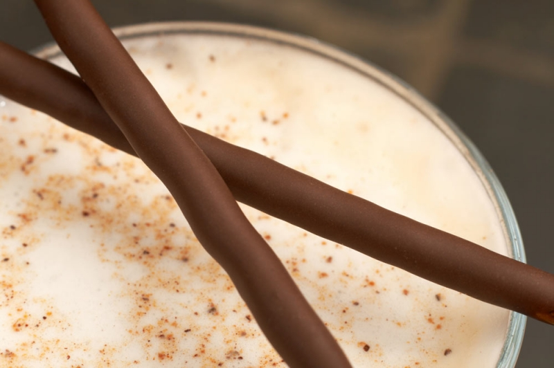

Chocolat chaud mousseux.
 20 min
20 min- Difficulté :

- Technique(s) : Epaississant
Ingrédients
Lc
Lécithine de soja
- 2g de lécithine de soja
- 0,5g de cmc ( Carboxyméthylcellulose)
- 50g cacao en poudre non sucré
- 50g de sucre en poudre
- 60cl de lait

Préparation
- Mélanger le lait, le cacao et le sucre. Faire chauffer tout en remuant.
- Hors du feu, ajouter la Lécithine et la CMC préalablement mélangées avec une cuillère à soupe de sucre.
- Mixer en incorporant le maximum d'air, à l'aide d'un mousseur à lait ou d'un mixeur à pied plongeant.